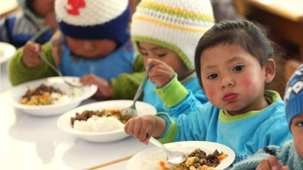

Nutricion
Esta página muestra recomendaciones nutritivos para infantes de 0-5 años de edad.
Plan Alimenticio
Muestra un régimen especial de alimentos para que el infante pueda absorver todos los nutrientes necesarios para su crecimiento.

Plan de Vacunas
Se evaluará las vacunas que tiene el infante y se reportará las vacunas faltantes.

Control de Crecimiento
En este módulo se visualiza los diferentes controles de crecimiento del niño dependiendo a su desarrollo nutricional.
BD de Alimentos Nutritivos
Este módulo representa una cantidad adecuada de alimentos nutritivos para que el infante pueda ingerir los alimentos necesarios.

Plan Alimenticio
Se puede observar las comidas necesarias ya que el infante necesita tener un régimen especial de alimentos nutricionales por tiempos específicos en su desarrollo.
Control de Vacunas
En este módulo se puede observar un reporte de vacunas, las cuales el infante tiene que tener necesario para que no tener complicaciones en su desarrollo nutricional.
Aplicación Web para la Salud Integral y Recomendación de Alimentos Nutritivos, para prevenir la Anemia en niños de 0 a 36 meses en la ciudad de Trujillo utilizando Machine Learning. La Libertad.
A través de estadísticas elaboradas por el Instituto Nacional de Estadística e Informática(INEI) en el año 2017 el problema persiste en todo el país siendo en algunos lugares más afectados que otros, por ende este mal afecta durante los 36 meses de edad y persiste hasta los 56 meses de edad, anteriormente se tenia un registro promedio de el 57% en todo el país en el año 1996.
En beneficio de los niños, tanto de zonas urbanas como rurales, este problema ha ido mejorando en el transcurrir de los años. estaríamos hablando que en todo el país casi 4 de cada 10 niños aún incurre en este problema que basado en investigaciones siendo un problema que afecta en gran medida a sus posteriores años en distintos aspectos de su vida y podemos decir que en La Libertad esto afecta en un 50% mientras que en los lugares más vulnerables como Loreto y Puno es de mayor intensidad. En La Libertad es problema afecta a 4 o 5 de 10 niños y en Loreto y Puno este más afecta entre 6 o 7 niños de igual manera.

Contáctanos: Para poder responder tus dudas y mejorar la Alimentación nutritiva de tu bebé.
Desarrolladores: Jorge Jhonel Cedeño Ñique & Eder Alexander Jara Tomapasca.
Product Owner: Damián Elías Enrique Santa Cruz.
Gerente del Proyecto: Walter Manuel Cueva Chávez.

Servicios: Control de Crecimiento y Reporte de Vacunas del Infante.
Control de Crecimiento: Se podrá mostrar por medio de gráficas las predicciones del avance nutricional del bebé y por tal motivo se tendrá un control adecuado de su crecimiento.
BD Alimentos Nutritivos: En este módulo te permite seleccionar los alimentos los cuáles el infante debe consumir para su desarrollo nutricional.
Plan Alimenticio: En esta etapa se puede seleccionar el régimen especial de comidas en las horas adecuadas que debe consumir el infante para su desarrollo.
Control de Vacunas: En este proceso se lleva a cabo el control de un reporte de Vacunas y a través de alertas tendrás actualizado las vacunas faltantes que necesita tu bebé.